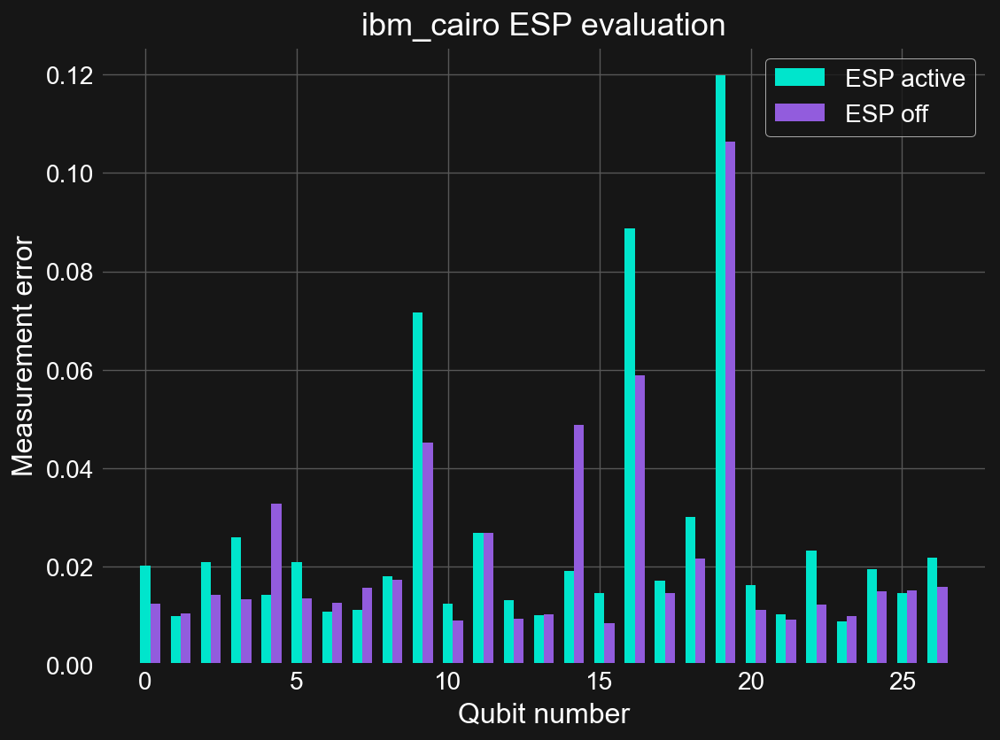
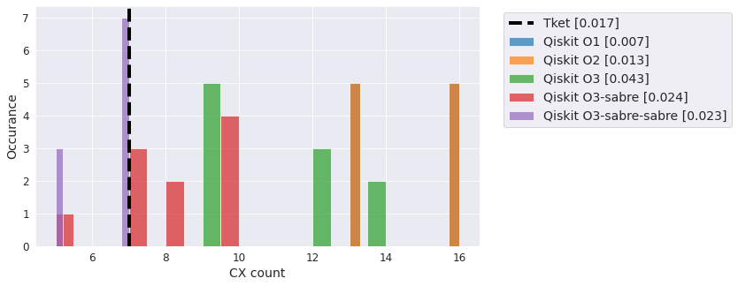
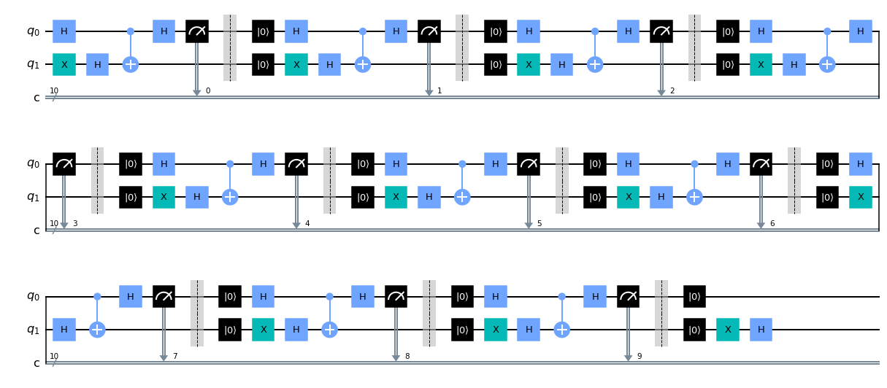

Paul Nation#
I am currently a Principal Research Scientist in the IBM Quantum team at the T. J. Watson research lab in Yorktown Heights New York. I primarily work in the area of quantum software development, with a focus on numerical methods and scientific visualization techniques. I also occasionally explore hardware benchmarking and verification, looking at generational system improvement metrics.
I have been working in the area of numerical quantum optics for over 15 years, starting with the creation of QuTiP : Quantum Toolbox in Python in 2010 up to the present with the IBM Qiskit SDK. I received my PhD in 2010 from the Dartmouth College Department of Physics and Astronomy under Miles Blencowe. In addition to numerical methods in quantum optics I have also explored quantum nanomechanical systems, optomechanical system in the quantum regime, analogue gravitational physics, and transport models for Hawking radiation. Prior to joining IBM, I was a Staff Physicist at Northrop Grumman, an Assistant Professor in Korea University Department of Physics, and a postdoctoral researcher in the group of Franco Nori at RIKEN just outside of Tokyo.
Recent posts#
See the blog archives for a more complete list.
2021-12-20 - Pitfalls in generating random numbers on quantum computers
One of the first things many beginning quantum practitioners do is try to exploit the random nature of quantum measurements to build a basic random number generator. Typically they do this via one or more Hadamard gates, and then quickly post an issue saying they do not observe the expected 50/50 outcome of 0’s and 1’s. Taking this a step further, many companies are looking to commercializing quantum random number generation (QRNG) as a service. These services usually are marketed with words like “true randomness” or “quantum certified”. Recently news spread of a new QRNG service from Cambridge Quantum Computing (CQC) called Quantum Origin. CQC is now part of Quantinuum, a joint venture with Honeywell Quantum Solutions. This service even has a collection of Partners attributed to it.
The materials available from CQC suggest that this is essentially the same service as that introduced by CQC and IBM over a year ago. This service has been a part of Qiskit since the announcement has the qiskit-rng module. Given that this is open source software, we can play around with the code to see why the underlying QRNG method can never be truly “certified” as being quantum in origin.
2021-12-20 - Excited State Promotion (ESP) Readout
Excited State Promotion (ESP) readout is method for decreasing measurement errors in quantum computing systems where decay from the excited \(|1\rangle\) state to \(|0\rangle\) is non-negligible over the measurement timescales. Although it was originally an useful technique on the previous generation Falcon R4 systems, today it is only available on a few Falcon R5 systems where the nearly order of magnitude improvement in measurement times leaves little value in using this functionality. In testing, it looks to even be a bit worse performing than the standard readout method. ESP readout is on by default for those systems that support it. To disable it run:
On many quantum computing platforms one of the two computational basis states, the \(|1\rangle\) state by convention, is an excited state of the system with respect to the ground state \(|0\rangle\). The difference in energy between these two states defines the frequency of the qubit through the relation \(E=hf\). Because the \(|1\rangle\) state is an excited state, there is a non-zero probability that the state will decay to \(|0\rangle\) via interaction with the environment. The characteristic timescale for this is the \(T_{1}\) time of the qubit. When performing gate operations, or non-reversible instructions like measurements on qubits, if the time it takes to perform these operations is a non-negligible fraction of \(T_{1}\), then there is a possibility that this decay has occurred.
2021-11-28 - Comparison of Falcon R5 processors verse R4
Recently IBM Quantum announced the move to revision 5 (R5) of its Falcon processors see this tweet from Jay Gambetta. In particular it was highlighted that there is a 8x reduction in meausrement time on these systems. Lets see if this, or any other enhancements, are visible from the system calibration data.
The highlight of the recently released Falcon R5 “core” systems is their much improved measurement times (7x) and error rates (2x). On these systems a measurement is roughly twice as long as a CNOT gate, compared to 13x on the old R4 systems, and allows for implimenting high-fidelity dynamic circuits with resets, mid-circuit measurements, and eventually classically-conditioned gates. For other tasks, the modest improvements in the CNOT gate errors and \(T_{1}\) times are also welcomed.

2021-10-31 - Choosing the best Qiskit swap mapper
One of the most important (perhaps the most important) steps when compiling quantum circuits for architectures with limited connectivity is swap mapping. If a requested two-qubit gate cannot be implimented directly on hardware, the states of the corresponding qubits must be swapped with those of their neighboors until the states reside on qubits where a two qubit gate is supported. Swap gates are expensive, equal to three CNOT gates, and therefore moving qubit states around using the fewest number of swap gates is desireable. Unfortunately, directly computing the minimum number of swap gates is NP-complete, and heuristics need to be developed that come close to the ideal solution while scaling favorably with the number of qubits.
Qiskit supports a variety of swap mappers and other optimization settings, and how to best set these options is important for getting high-fidelty results. Additionally, there are other Qiskit compatible compilers out there that should also be evaluated. To this end, here we look at a selection of circuits compiled with various Qiskit compiler settings, as well as those produced with the Cambridge Quantum Computing (CQC) Tket compiler. We will investigate the performance of these methods in terms of both number of CNOT gates in the output, as well as the associated runtimes. Because Qiskit swap mappers are stochastic, we will run each one several times and plot the distributions of results.
2021-10-27 - Dynamic Bernstein-Vazirani using mid-circuit reset and measurement
The ability to do mid-circuit reset and measurement unlocks a variety of tools for executing quantum circuits. A brief discussion is given in this IBM Research blog post. On particular possibility is the ability to reuse qubits, and in doing so reduce the hardware requirements of some algorithms. The Bernstein-Vazirani (BV) algorithm is one such example. In particular, when using phase-kickback, BV usually requires a high degree of qubit connectivity to impliment. This has been used by trapped-ion hardware vendors to show that their hardware gives better fidelity on these problems, e.g. see (https://arxiv.org/abs/2102.00371 and https://www.nature.com/articles/s41467-019-13534-2). However, with reset and measurement, BV requires only two qubits, making connectivity differences mute. We showed this in a reply Tweet: https://twitter.com/nonhermitian/status/1362348935440986113, but did not explain how we got that figure. So here is how I did it.
Here we select the backend and extract its two-qubit gate coupling map. This is not the same backend used in the original figure as, at the time or writing, that one is offline. It is however the same processor family and revision.
2021-10-13 - Custom Expectation Value Program for the Qiskit Runtime
Here we will show how to make a program that takes a circuit, or list of circuits, and computes the expectation values of one or more diagonal operators.
You must have Qiskit 0.30+ installed.
2021-10-07 - Custom VQE Program for Qiskit Runtime
Here we will demonstrate how to create, upload, and use a custom Program for Qiskit Runtime. As the utility of the Runtime execution engine lies in its ability to execute many quantum circuits with low latencies, this tutorial will show how to create your own Variational Quantum Eigensolver (VQE) program from scratch.
You must have Qiskit 0.30+ installed.
{kind=link}